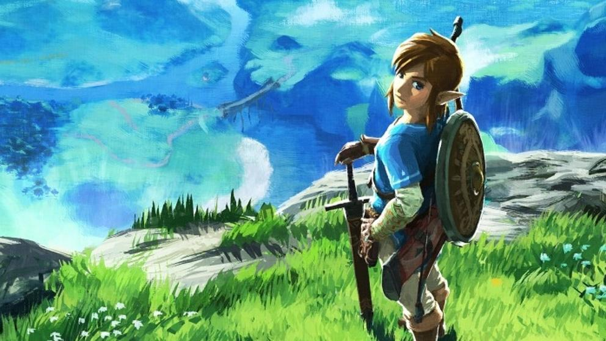

El nuevo The Legend of Zelda llega con sorpresa (de pago)
Nintendo confirma un pase de expansión de pago que dará acceso a dos nuevos DLC.
Javier Monfort - https://hipertextual.com/2017/02/the-legend-of-zelda-breath-of-the-wild-pase-expansion-dlc
Comentarios
Alex, escribió:
7/3/2017 - 12:45
WTF?? Ahora además de comprar la Switch y el juego de Zelda vamos a tener que pagar por el contenido adicional?
Guille, escribió:
10/3/2017 - 18:12
Como no, vaya novedad! Con el éxito que se esperaba del nuevo Zelda, van a aprovechar para sacarnos el dinero a los fans.
Noticias Relacionadas
¡Lanzamientos Marzo de 2017!
PSPlus - Marzo
NieR:Automata triunfa en Japón
Terminan Zelda: Breath of the Wild en hora y media

De forma inexperada para todos los fans de Zelda, Nintendo incluira un pase de expansión, siendo asi el segundo juego de Nintendo que lo incluya en toda su historia. Este incluirá dos DLC, uno en verano y otro en navidad.
Javier Monfort
02/03/2017
Tras cinco años de desarrollo, The Legend of Zelda: Breath of the Wild está ya a la vuelta de la esquina. Hace solo unos días se confirmaba la finalización del desarrollo de la última aventura de Link y todo parece estar preparado para su llegada a Wii U y Nintendo Switch el próximo 3 de marzo. Pero, pese a ello, aún queda mucho por saber y hay hueco para las sorpresas.
Una de ellas, quizá del todo inesperada, es que Nintendo ha confirmado la existencia de un pase de expansión para el título, siendo el primer The Legend of Zelda de la historia en recibir contenido adicional de pago y, dejando a un lado los dos paquetes de DLC de Mario Kart 8, uno de los primeros juegos de Nintendo en introducir este tipo de contenido. En el texto publicado en la web oficial de Nintendo se confirma que, en verano y navidad, recibiremos dos contenidos adicionales que deberán ser adquiridos de forma conjunta por un precio de 19,99€.
Javier Monfort - https://hipertextual.com/2017/02/the-legend-of-zelda-breath-of-the-wild-pase-expansion-dlc
Asimismo, todo aquel usuario que adquiera desde ya ese pase de expansión encontrará tres cofres adicionales en la zona inicial del título, teniendo acceso a "distintos objetos útiles" y una exclusiva camiseta con el logo de Nintendo Switch para Link. En cuanto a los DLC, el primero incluirá una nueva característica para el mapa de Link, un modo difícil y un reto en la Cueva de las Pruebas (Cave of Trials). El segundo, por su parte, incluirá una nueva mazmorra y una nueva historia que jugar.